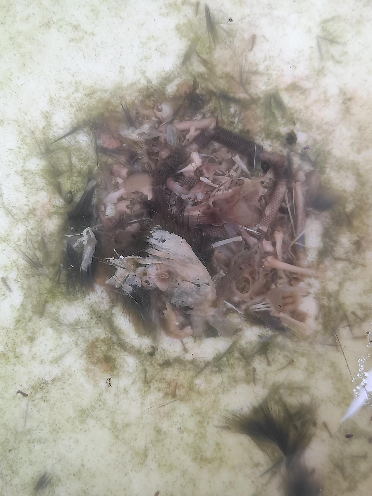
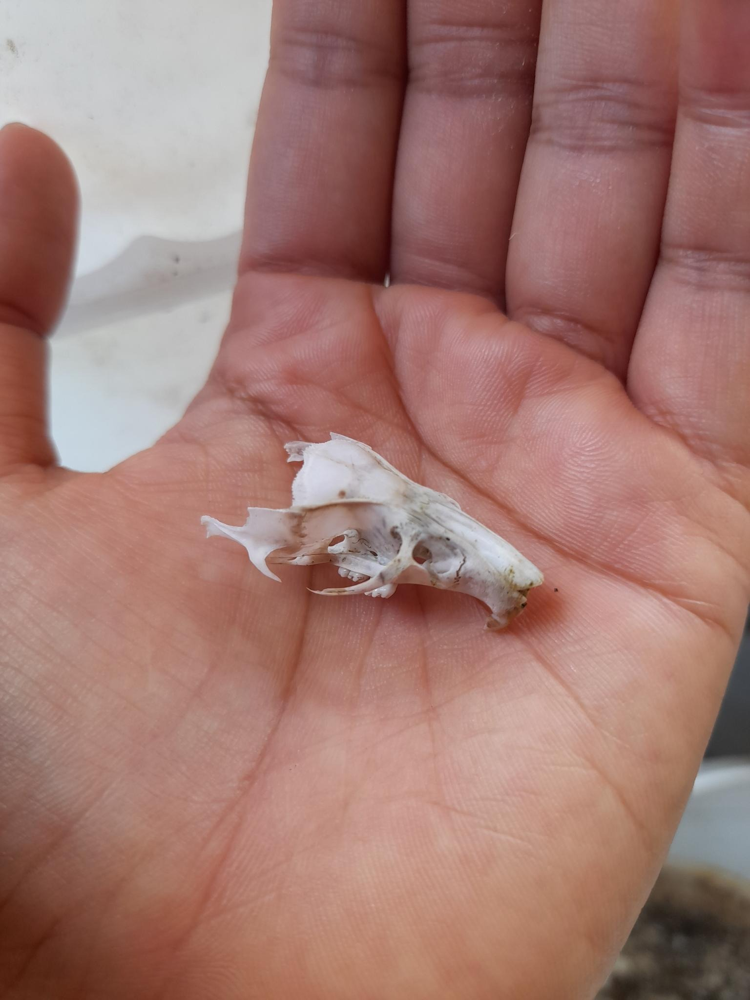
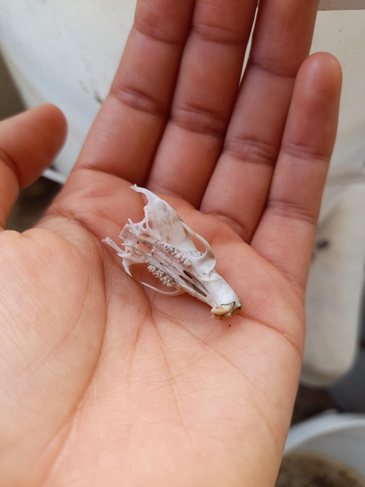
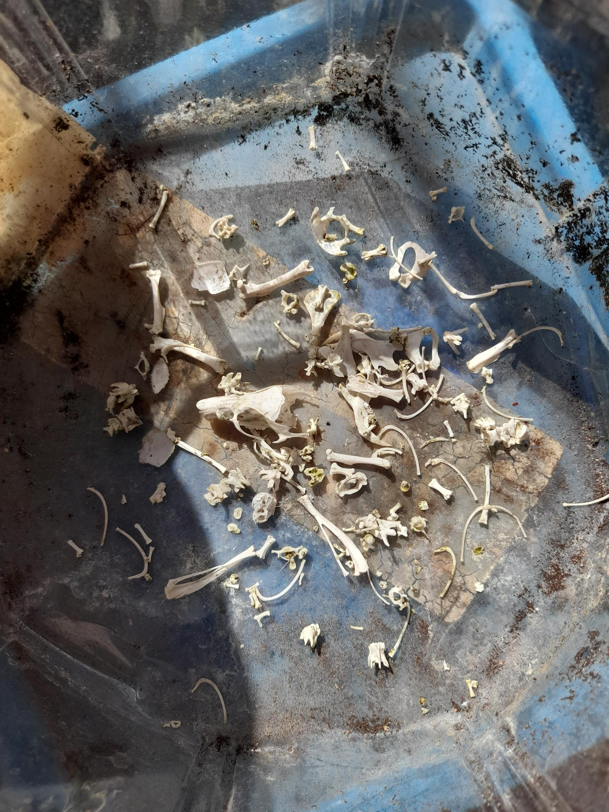

rat (west side of the house)
home
jan 2024, ongoing
animal: rat
death: maybe 25th of jan, 2024, give or take
treatment: left outside for a few days
after a few days in the sun

soaking in water

skull

the bottom of the skull

i put off actually dealing with these bones for a super duper long time so
i'm not sure how long the de-goopification actually took unfortunately